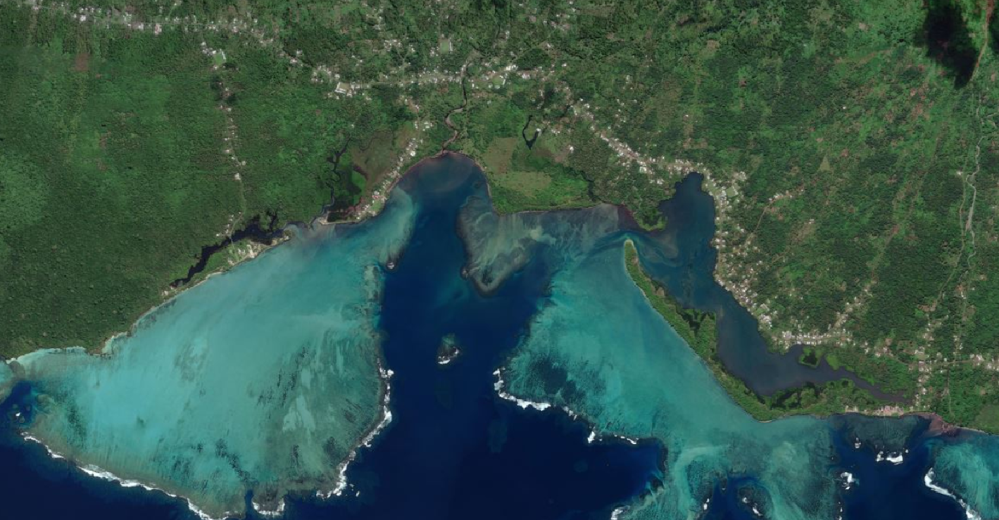
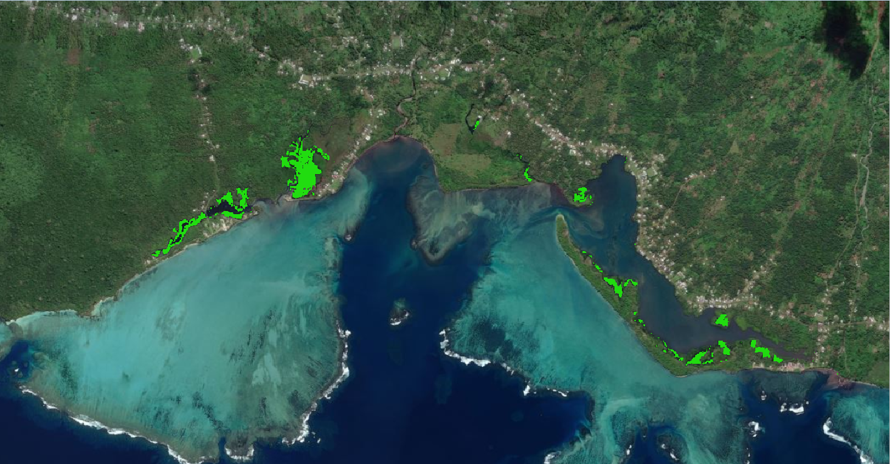

1. GAIT Global, Hyderabad (May'2023 - Present)
 Project - OSCMI-based classification scheme for rapid and accurate mangrove mapping.
There are two kinds of mangrove extraction methods: one is classification, and the other is index-based threshold segmentation or decision tree. Traditional classification method relies on a large number of samples and complex classifiers, which is not suitable for the large-scale extraction of mangrove because of low computational efficiency and poor generalization ability. Using vegetation index can extract target object on the large-scale rapidly, and vegetation index can represent vegetation properties better than using original and individual bands.
-
The existing mangrove indices have the following problems :-
- All mangrove indices are constructed based on optical remote sensing images, but the availability of optical images is affected by clouds and fog.
- Some mangrove indices need multi-temporal images of high tide and low tide to solve the problem of tide flooding, this has a higher demand for data and requires more effort in data screening.
- Many mangrove indices have been tested in only one or a few areas (usually with tall and dense mangroves), but different types of mangroves (tall and dense forest or low and sparse forest, rich or single tree species) will have great differences in images, so the ability of the indices for mangrove extraction in different regions needs to be further verified.
To solve the above problems, an Optical and SAR images Combined Mangrove Index (OSCMI) has been introduced. And we will design an OSCMI-based classification scheme, which can reduce the impact of tidal inundation on mangrove extraction to a certain extent.
Methodology: Firstly, the Sentinel-1 and Sentinel-2 images were pre-processed. Then, OSCMI were generated through band math, and the initial range of mangrove was extracted using threshold method. The OSCMI-based classification scheme mainly includes two steps. We firstly distinguished vegetation and non-vegetation by NDVI, and Table then we extracted mangrove from vegetation by OSCMI.
Threshold: This paper (Optical and SAR images Combined Mangrove Index based on multi-feature fusion) constructed an Optical and SAR images Combined Mangrove Index (OSCMI) based on the idea of multi-feature fusion and designed an OSCMI-based classification scheme for rapid and accurate mangrove mapping. The OSCMI threshold is relatively stable, and the recommended threshold range is 0.04–0.07. And users can make some adjustments in different regions.